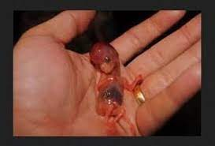

At three months pregnant, you’ve almost made it to the second trimester, and some of the early pregnancy symptoms you may have been experiencing may slowly start to subside. Read on to find out what may be in store for you at three months pregnant, including common symptoms. Plus, find out all the exciting ways your baby is developing this month.
At three months pregnant, you might still be experiencing some of the familiar symptoms of early pregnancy, but some new ones might crop up, too. Some of these symptoms might be quite challenging; keep in mind you may not experience them all.
A combination of pregnancy hormones and the increased blood supply in your body can lead to a bit more vaginal discharge than you might be used to. As long as it’s clear or whitish and doesn’t have a bad smell, it’s probably nothing to worry about. Try to wear cotton underwear and loose, breathable clothes to help prevent vaginal infections. Chat with your healthcare provider if you’re concerned about what’s happening.
You might still be feeling queasy, but perhaps for not much longer. Many moms-to-be say their morning sickness begins to subside during this month, which is great news! If you’re not so lucky, try eating bland foods like toast, rice, or bananas, and sip on ginger ale or ginger tea to soothe your stomach.
The sleepiness may continue this month as your body continues to nourish your little one. Rest when you can, stay hydrated, and do some moderate exercise, as this is shown to improve sleep. Prenatal yoga, walking, and swimming can be good choices, but talk to your healthcare provider before trying any new exercises.
If you’ve noticed that the color of your nipples has started to darken, this is because your body is producing more melanin, a type of pigment. This extra melanin can also cause brown patches on your face, which is called chloasma. You might also notice a dark, vertical line that runs from your belly button to the pubic area. This line might start to appear at three months pregnant as your belly size starts to increase. Most of these discolorations will disappear or fade after your little one is born.
Your breasts may be growing and changing this month, too. Your areolas may grow larger and darker, and your nipples may start to protrude a little more. Under the surface, milk glands are preparing to produce milk, and fat is being added to your breasts. If your bras feel too tight, it’s probably time to go up a size. Go for a professional bra fitting at your local department or specialty lingerie store to get a new bra that is more comfortable.
Some pregnancy hormones can cause your digestive system to slow down, leading to constipation. The extra iron in your prenatal vitamins may also be to blame. Make sure to stay hydrated and eat more fiber. Fruits, vegetables, and whole grains are great sources of fiber.
On the inside, your little one’s intestines and musculature system are taking shape. Some bones may start to harden, but the backbone is soft. On the outside, your baby’s hands and feet are growing tiny fingers and toes, which may even have the beginnings of fingernails and toenails at three months pregnant. At some point this month, your little one’s external genitals will start to form, and it won't be long before you'll be able to find out if you're having a girl or a boy!
At the start of this month your baby will be about ½ an inch long, and by the end of this month she’ll be almost 2 inches long and weigh about ½ an ounce.
Check out these illustrations for a glimpse at what your baby might look like when you’re three months pregnant:
It's possible that you might start to project a small baby bump sometime soon, although every mom-to-be starts to show at different times, and you might have to wait another few weeks. By this month, your uterus has grown to about the size of a large orange. Read more on when you might start to show here.
If your nausea subsides, you may find your appetite is returning. You’ll want to continue eating healthily. Even though there are two of you, you don’t actually need to “eat for two.” Experts recommend adding only about 300 extra calories to your diet each day. This is the equivalent of a light meal or snack. Unless you’ve lost a little weight due to morning sickness, you may end up gaining anywhere from one and a half to four and a half pounds this month. Consult your healthcare provider for advice on how much weight gain is right for you.
Wondering which weeks are in the third month of pregnancy? Good question! There's no standard answer, but three months pregnant is often defined as covering week nine through week 12 or week 9 through week 13. At the end of this month, you’ll be ready to begin the second trimester.